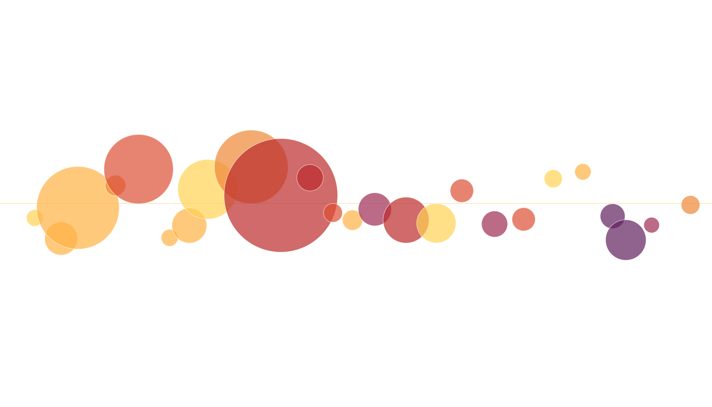
Conserving the Unseen:
Data Gaps in the Atlas of Living Australia
Shandiya Balasubramaniam
Dax Kellie
I acknowledge the Traditional Owners of the lands on which we meet, the Kaurna people, as well as the Traditional Owners of the lands on which I live and work, the Wurundjeri people of the Kulin Nation. I pay my respects to their Elders past and present. I recognise the spiritual and cultural significance of land, water, and all that is in the environment to Traditional Owners, and their continuing connection to Country.
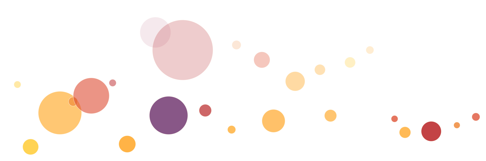
How do we address the conservation of poorly known species?
Our knowledge of biodiversity is spatially uneven…
…and contains temporal gaps
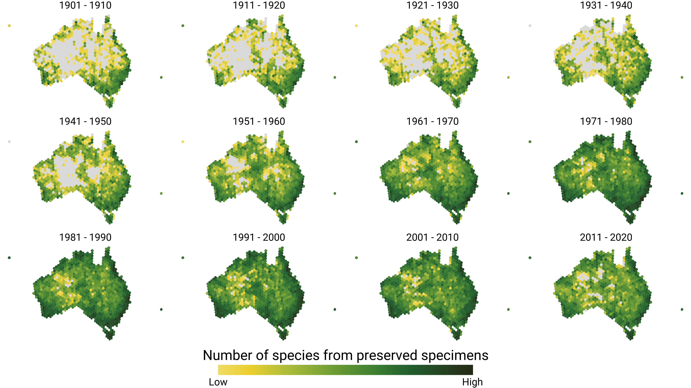
Is the ALA mostly birds?
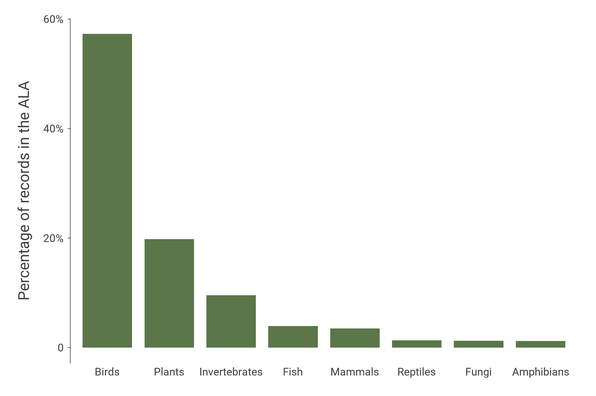
Is the ALA mostly birds? Yes.
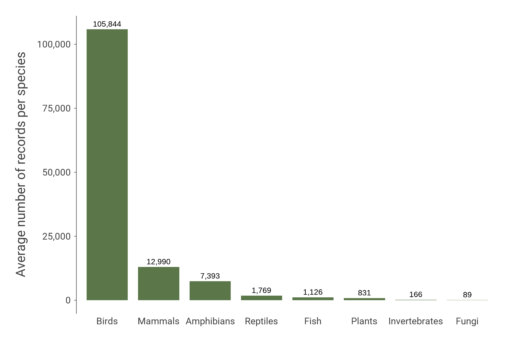
How many insects are effectively invisible?
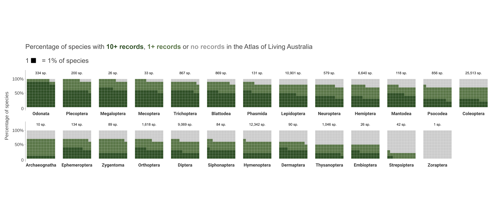
How can targeted efforts fill gaps in the biodiversity record?
Christmas Beetle Count
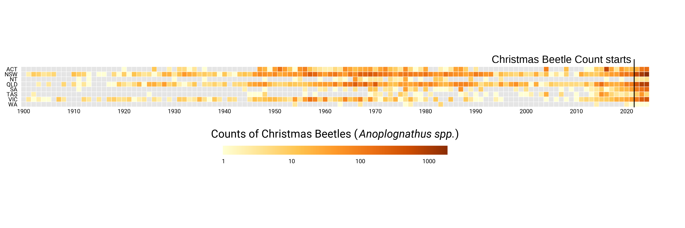
Christmas beetles and friends
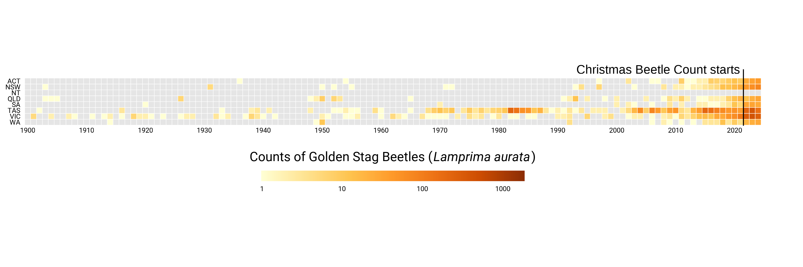 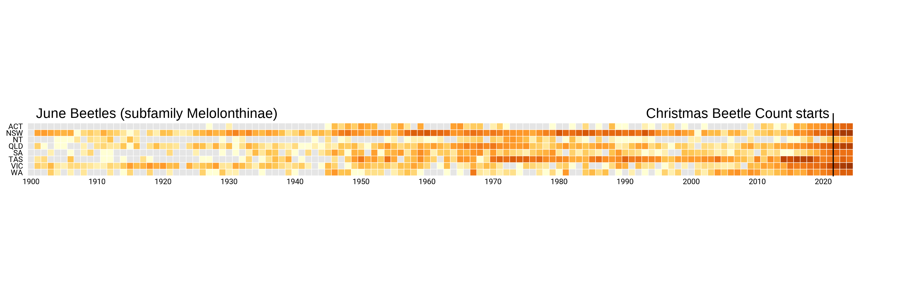 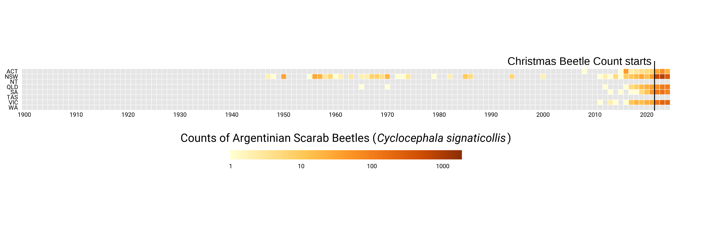
Australian Biodiversity Data Mobilisation Program:
Click Beetles, Museums Victoria (2024)
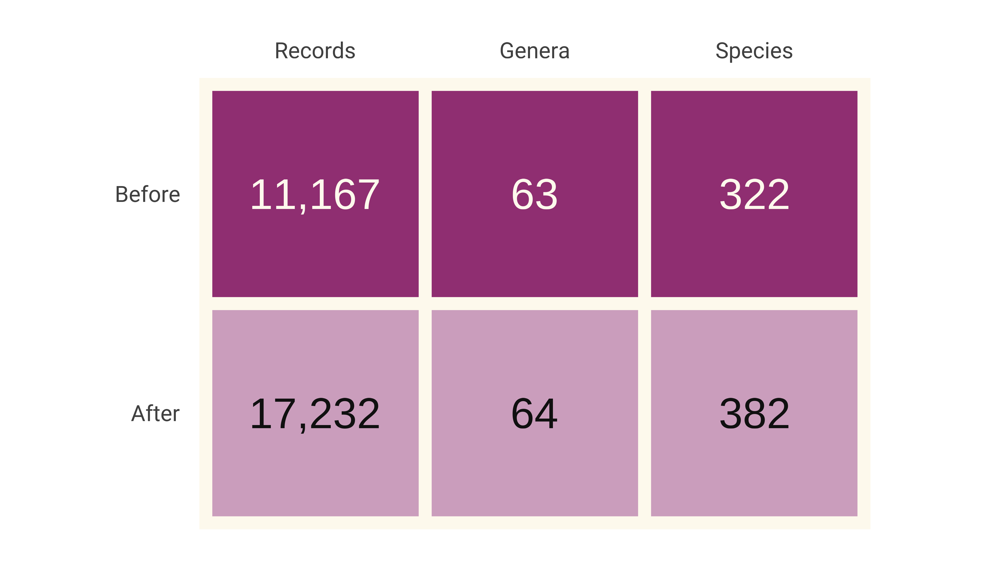
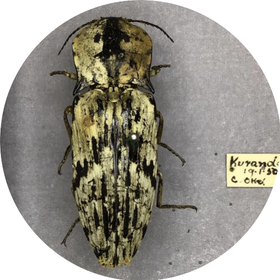
Lucy McMillan, Museums Victoria
Australian Biodiversity Data Mobilisation Program:
Click Beetles, Museums Victoria (2024)
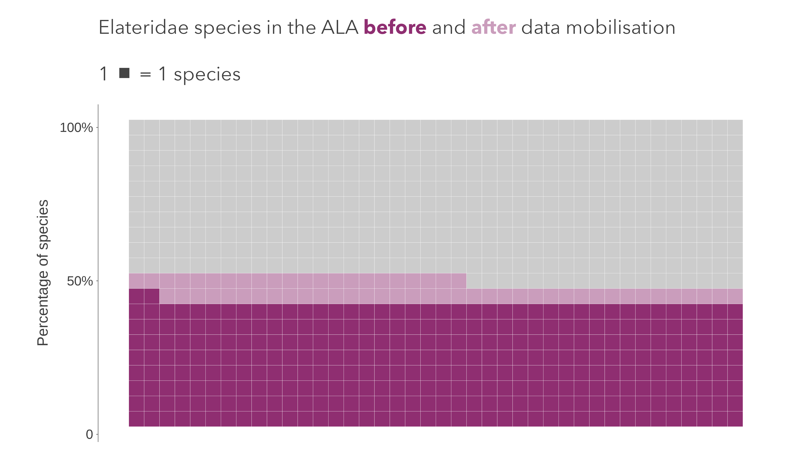
Australian Biodiversity Data Mobilisation Program:
Click Beetles, Museums Victoria (2024)
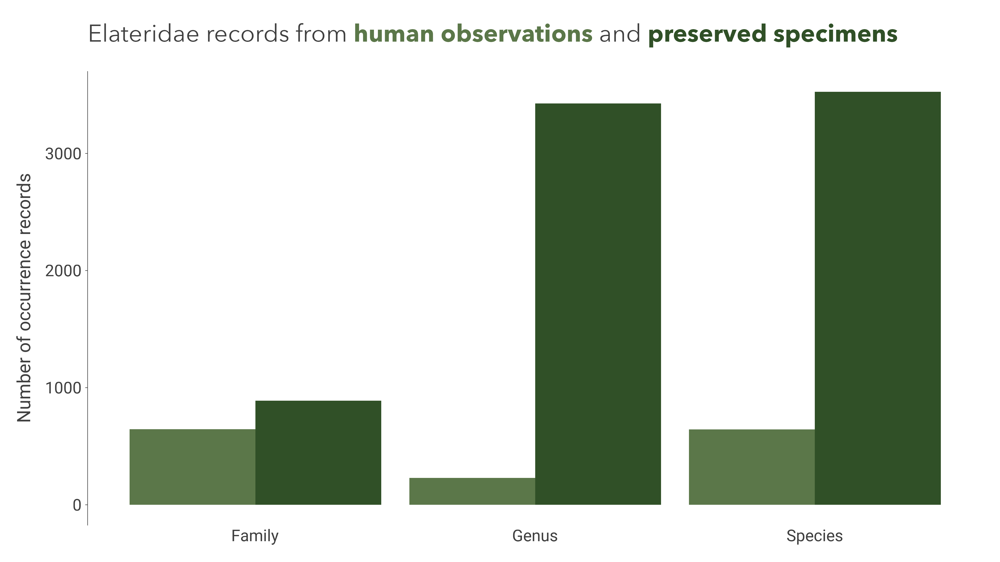
Shandiya Balasubramaniam
Decision Support Program Lead
Atlas of Living Australia
shandiya.balasubramaniam@csiro.au
shandiya.bsky.social
shandiya